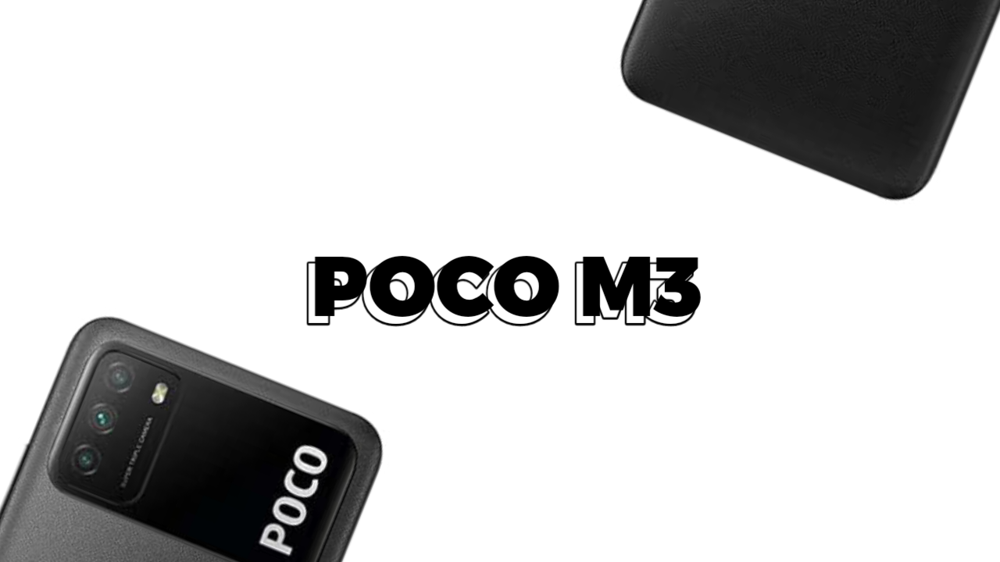

 Review singkat Poco M3/(citrus_id)
Body Poco M3 Terbuat dari Plastik Yang Memiliki Tekstur Seperti Kulit. Memiliki Bobot mencapai 198g karena Baterainya yang besar.
Display Poco M3 Menggunakan Panel IPS beresolusi 1080x2340 (FHD) dengan refresh rate 60Hz. Vendor Display Poco M3 adalah CSOT (TCL) tidak seperti hape murah Xiaomi lainnya yang memakai Tianma. Namun, tingkat kecerahannya masih kurang untuk penggunaan outdoor, dan saya mengalami touch delay di sekitar pinggiran layar.
Poco M3 dibekali dengan Snapdragon 662 (665) untuk prosesornya. Di Game Call of Duty Mobile bisa membuka settings Grafis Sangat Tinggi dan Framerate High. Average FPS saat bermain di MP adalah 37-49FPS. Sedangkan Average FPS saat bermain BR berada di 29-30an FPS. Main Minecraft dengan Texture HD masih bisa angkat 50FPS 14 Render Distance Semua Settings Diaktifkan keciali Ray Trace dan Upscale. Suhu Nya Bisa Mencapai 48°C (permukaan) masih bisa dibilang biasa aja suhunya. Skor AnTuTunya Kisaran 200rban dengan Skor CPU mencapai 60rb dan Skor GPU mencapai skor 30rb cukup bagus di kelasnya
Poco M3 sudah Android 10 dengan MIUI 12.0.7. UI yang smooth, ""ringan"" dan simple. MIUI 12 hanya menggunakan 1.5GB RAM meninggalkan 2.1GB Tersisa untuk Aplikasi lainnya. Sayangnya Background Blur di Control Center dihilangkan dan beberapa fitur juga dipangkas.
Menggunakan Sensor Kamera Samsung GM1 berresolusi 48MP dengan aperture f/1.79. dan dua sensor useless lainnya masing masing ber resolusi 2MP. Hasil Foto Bisa di Lihat dibawah. dan Poco M3 udah support level_3 aka RAW File jadi kalau ngedit foto lebih gampang.
Baterai Poco M3 ini irit. Apalagi kalau di update ke 12.0.7, SoT tembus 6Jam dan masih menyisakan 58%. Poco M3 Memakan Bateeai sebanyak 200-300mAh perjam atau 0.1-0.3mAh per Detik. Charger Support Fast Charging 18W dengan Brick Bawaan 22.5W. mengisi daya dalam 1Jam 59Menit atau 2 Jam.
Menggunakan UFS 2.1 dikala pesaingnya masih menggunakan eMMC 5.1. terdapat dua varian yaitu 4/64 dan 6/128. 4/64 memakai UFS 2.1 sedangkan 6/128 memakai UFS 2.2
Sekian itu aja review singkatnya. Terimakasih